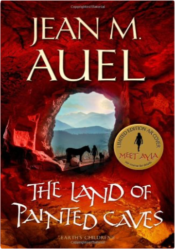

 Land of Painted CavesJean M. Auel  THE LAND OF PAINTED CAVES concludes the story of Ayla, her mate Jondalar, and their little daughter, Jonayla, taking readers on a journey of discovery and adventure as Ayla struggles to find a balance between her duties as a new mother and her training to become a Zelandoni - one of the Ninth Cave community's spiritual leaders and healers. Once again, Jean Auel combines her brilliant narrative skills and appealing characters with a remarkable re-creation of the way life was lived thousands of years ago, rendering the terrain, dwelling places, longings, beliefs, creativity and daily lives of Ice Age Europeans as real to the reader as today's news.  Listen to audio presented by Literary Affairs: Pride and Prejudice.  The best non-fiction novel since "In Cold Blood" is a true story of intrigue, murder, forgery and eccentricity set in the steamy, surreal atmosphere of Savannah, Georgia. The unpredictable twists and turns of a murder case are skilfully interwoven with a hugely entertaining first-person account of life in this isolated remnant of the Old South.  A superb history of the world's people during the last four million years, beginning before the human race moved out of Africa to explore and settle the other continents. Mr. Blainey explores the development of technology and skills, the rise of major religions, and the role of geography, considering both the larger patterns and the individual nature of history. A delightful read, gracefully written, and full of odd and interesting pieces of information as well as thoughtful comparisons that span both time and space. —William L. O'Neill |   Lavishly illustrated tribute to nearly 100 majestic sailing vessels now used as training ships and symbols of goodwill: Amerigo Vespucci, Clearwater, Constitution, Mayflower, Peking, Shenandoah, Victory, Viking and many more. Approximately 190 black-and-white photographs and other illustrations. Informative captions provide statistics, background information on each. Introduction. List of ships.  Orphaned into cruel charity at the hands of her rich cousins and later at Lowood school, Jane escapes to take up a position as a governess to the young ward of Mr Rochester. The story of their love affair, Jane's discovery of Rochester's secret and her desperate flight is an enduring classic.  When a scientist is found brutally murdered, Harvard professor Robert Langdon is asked to identify the mysterious symbol seared onto the dead man's chest. Realising it must be the work of the Illuminati - an ancient secret brotherhood sworn against Catholicism - the race is on to prevent a tragedy.  Take a tantalizing food journey with the Soil Association and find out how to create your own delicious preserves - with less sugar and no nasty additives. From luscious jams and jellies to savoury confits and salamis, discover how to preserve your wonderful fresh produce and create a wealth of fabulous preserves using the very best natural ingredients. From plot to plate, 45 essential techniques are covered, from salting and curing to preserving in oil, and easy-to-follow step-by-steps show you exactly what to do. With information on recommended equipment and over 200 delicious recipes based on traditional techniques, learn to preserve your gluts in produce and stock up your store cupboard for the whole year. |

Doddridge Library
Collection Total:
417 Items
417 Items
Last Updated:
Apr 21, 2020
Apr 21, 2020


 Made with Delicious Library
Made with Delicious Library